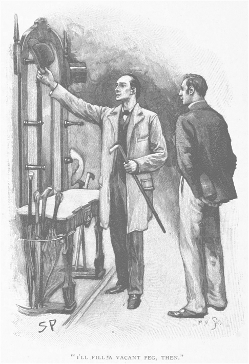
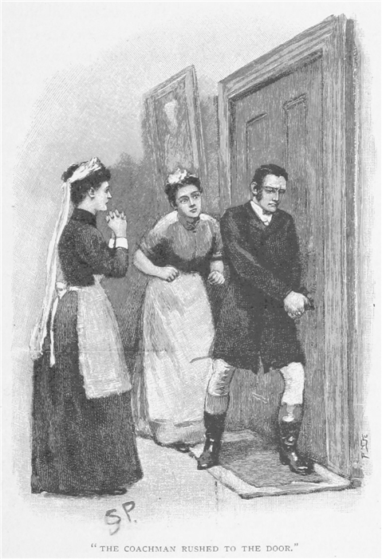
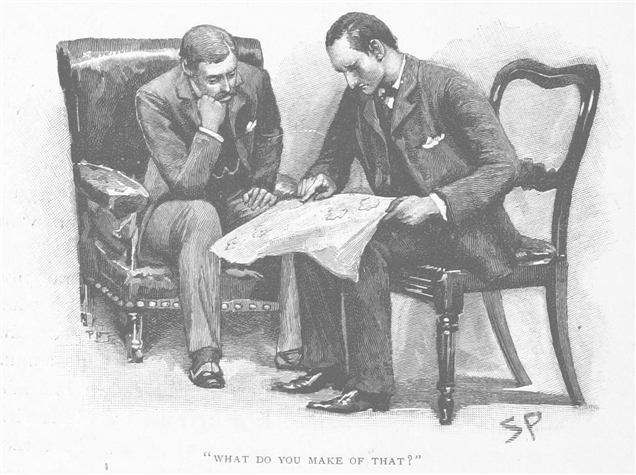
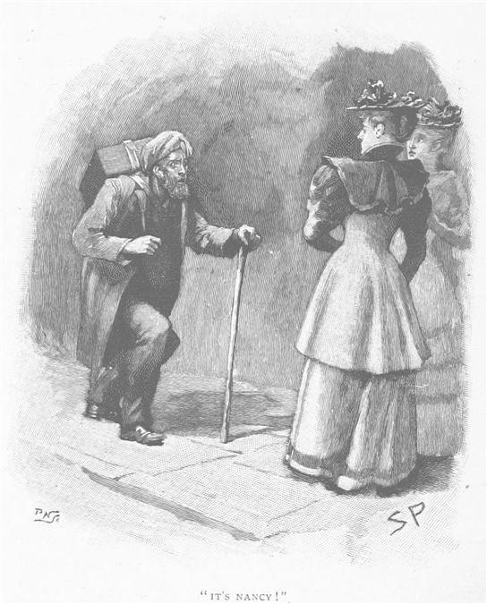
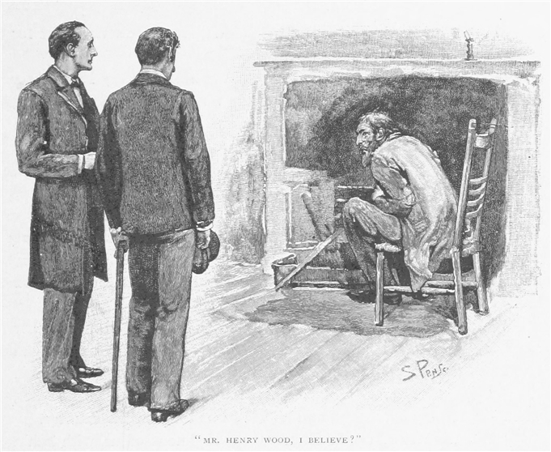
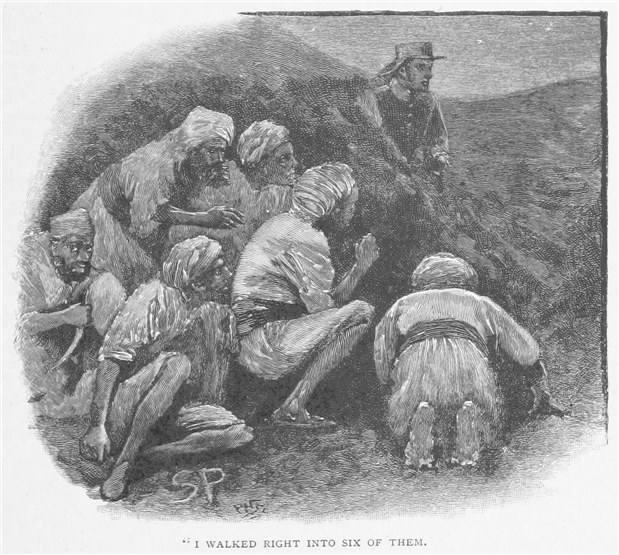
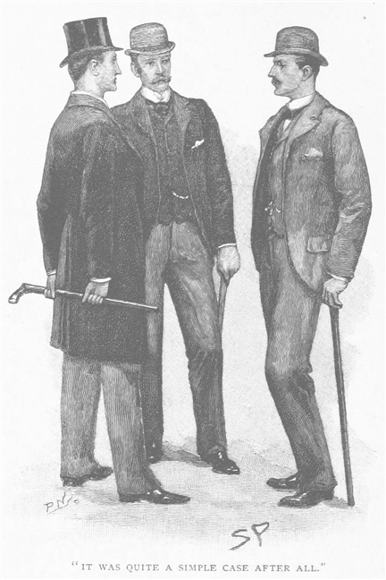

ある日の夜、結婚して数ヶ月後のことだ。私は暖炉のそばに座りながら、寝る前の一服をくわえたまま小説を手にうとうとしていた。日中の仕事でずっと疲れ通しだったのだ。妻はとうに上へ
時計を見た。一二時一五分前。こんな遅い時刻であるからただの客ではない。どうやら患者か、一晩付きっきりかもしれぬ。しかめ面で玄関へ出て戸を開ける。すると驚いたことに、戸口に立つのはシャーロック・ホームズではないか。
「よかった、ワトソン。」と我が友人は言う。「まだこの時間なら捕まるかと思って。」
「なんだ君か。さあなかへ。」
「驚いたようだが無理もない！ 同時に安堵もしたね？ ほお！ まだアルカディア・ミクスチュアを吸っているのか。君は独身の時からそうだな！ その上着のふわりとした灰で一目瞭然。君が軍服の着慣れた男だとも容易に言える。ワトソン、君が純血の文民と見られることはまずなかろうよ、袖口にハンカチを入れて歩く癖を続ける限りはね。今晩、置いてもらってもいいかな？」
「喜んで。」
「独り者用の部屋が君のところにあるという話だったが、今厄介になっている人物はないようだ。この帽子掛けの様子では。」
「だからぜひとも泊まっていってくれ。」
「ありがとう。では、空いてる帽子掛けをひとつふさごう。気の毒に、英国の職人を近頃なかへ入れたね。よくない兆しだ。配水管ではなかろうね？」

「ああ、ガス管だよ。」
「おや！ 靴の爪痕をふたつも床に残していったか、明かりの届く範囲だけでも。いや結構、食事ならウォータルーで済ませてきた。それより、君とパイプを一服というなら喜んで。」
私は煙草入れを友人に手渡し、また友人は私の向かいに腰を下ろして、しばらく無言のまま煙を吹かしていた。こんな時刻に訪ねてきたのは重大な事件があるからにほかならないと承知していたから、自分から触れてくれるまでじっと待っていた。
「この頃は割に仕事が忙しそうだね。」と、友人は私の方へ鋭い視線を向けてくる。
「ああ、日中は働きづめだ、君の目からは馬鹿馬鹿しく見えるだろうが。」と答え、それから、「それにしても今のは素晴らしい演繹だ。」
ホームズはひとりほくそ笑む。
「僕は君の癖を知っている点で有利なのだよ、ワトソンくん。回診が短いとき君は歩き、長くなればハンソム馬車を使う。君の靴は履きつめているのに汚れがまったくないとすれば、ハンソムの使用を認めねばならぬほど今は忙しいに相違ない。」
「お見事！」と私が声を張り上げると、
「初歩だよ。」と友人は言う。「今のはほんの一例だが、推理の結果がそばにいる者にとって目を見はるようになるのは、その者が演繹の基点となるささいな一点を見逃しているからだ。同じことが、ほら、君の書いたささやかな短編のうちの、いくつかの結末にも言えるだろう。あれはまったく俗悪だが、それというのも問題の要点がいくつか読者にまったく伏せられており、君の手中に握られているというのだからね。ところで目下、僕もその読者と同じ立場にある。これまで人の頭を悩ませたなかでも最大級の怪事件、その糸が数本、手のうちにはあるのだが、僕の仮説に必要なものがひとつふたつ足りない。だが、つかんでみせる、ワトソン、つかんでみせる！」その目は輝き、こけた頬にもかすかな赤みが差す。ふと、その鋭く烈しい性質が露わになったのだが、ほんの一瞬だけだった。再び目をやると、人というより機械だと言う者の多い、あのアメリカ先住民のごとき静けさを顔にたたえているのだった。
「その問題には、惹かれるところがある。」と友人。「類がないと言ってもいい。その件については調査中で、思うに、もう解決も見えてきている。その大詰めに君がついてきてくれるなら、僕も大いに助かるのだが。」
「こちらこそ願ってもない。」
「明日、オールダショットくんだりまで来られるか？」
「業務の方はきっとジャクソンがやってくれる。」
「結構、ウォータルー一一時一〇分発で向かいたい。」
「それなら余裕もある。」
「それから、もし君が眠くなければだが、これまでの経緯と残りの仕事についておおまかに話しておきたい。」
「君が来る前は眠たかったが、今は実に目が冴えているよ。」
「要点を落とさない程度に、事件をできるだけかいつまんで話そう。君もこの件の記事は読んだことがあるはずだ。オールダショットのロイヤル・マロウズ所属のバークリ大佐が殺されたと目されているのだが、これを僕が調べている。」
「初耳だよ。」
「地元以外ではさほど注意を引かなかったかもしれない。事が起きてまだ二日だ。手短に言うとこうだ。
ロイヤル・マロウズはご存じの通り、大英陸軍でも名の聞こえたアイルランド連隊のひとつだ。クリミアでもインド大反乱でもめざましい働きをし、以来ことあるごとに名を挙げてきた。それを月曜夜まで率いていたのがジェイムズ・バークリ、歴戦の勇者で、初めはただの一兵卒だったが、大反乱の折の活躍で将校階級に昇進、かつては自らマスケットを担いだ連隊を率いていくことになった。
バークリ大佐が結婚したのは軍曹の時で、その妻は結婚前の名をナンシィ・ディヴォイといい、同連隊の元軍旗軍曹の娘になる。だからと言おうか案の定、人付き合いがあまりうまく行かない。若いふたりが（とはいえ当時の話だが）新しい環境に入るとなるとそうなる。だがまもなく順応したようで、バークリ夫人はずっと連隊のご婦人方の人気者だ。同僚士官内の旦那と同様に。言っておくと、その女はたいへんな美人で、結婚して三〇年以上なる今でも、依然としてその容貌は人目を引くものだ。
バークリ大佐の家庭生活は、一様に幸福だったそうだ。マーフィ少佐、これら情報の提供者なのだが、彼はふたりのあいだに諍いなど何もなかったと断言している。彼の考えでは、だいたいのところ、旦那から妻への愛情の方が、その逆よりも深かったという。一日妻から離れると、すこぶるやきもきしてしまう。かたや妻は貞淑ではあったが、とりたてて情熱的というわけでない。それでもふたりは連隊内で、中年夫婦の理想像と目されていた。その後の悲劇を思わせるようなことは、ふたりのあいだに皆無だったのだ。
バークリ大佐本人には、その性格に変わった一面があったらしい。普段は威勢のいい快活な老兵なのだが、うちに秘めたる激烈な凶暴性や執念深さを見せるようなこともあった。ただ性格のその一面が妻に向けられることはけしてなかったようだ。さらに次の事実は、マーフィ少佐のほか話をした五人中三人の士官の心に残っていたのだが、時折、妙にふさぎ込むことがあったという。少佐の表現では、食卓で笑い話に興じているとき、何か見えざる手によってか、時々その口から笑みが消されてしまうのだとか。そういう気分のとき、大佐は何日も続けて心底滅入ってしまうのだという。このほか、迷信を信じているふしがあるというのが、同僚士官の見た限りでの彼の性格の変なところだ。この後者の点だが、とりわけ日の暮れた後、ひとりにされるのを嫌がるという形で現れる。極めて雄々しい性格のうちに、こんななよなよとした一面があるため、しばしば噂が立ったり憶測を呼んだりしたとか。
このロイヤル・マロウズの第一大隊（旧一一七部隊になるが）、これは長年オールダショットに駐留している。士官は結婚すると兵舎を出るから、大佐は北部キャンプから半マイルほどのところの『ラシーン』という名の邸宅を、この頃はずっと借りていた。家は庭に囲まれていたが、その西側は大通りから三〇ヤードと離れていない。御者がひとり、女中がふたりで使用人全員となる。ここに主人夫婦を加えたものだけがラシーンの住民というわけだ。バークリ夫妻には子どもがなく、泊まりの客もたいていなかったからだ。
さてここからが、このラシーンで月曜日の晩、九時から一〇時のあいだに起こった事件となる。
バークリ夫人はローマ・カトリック教会の一員なのだそうで、聖ジョージ組合の設立に深く関わっていた。これは古着を貧民に支給するのを狙いとして、ワット街教会堂の協力で作られた組織なのだが、その日の晩の八時にその組合の会合が行われるので、バークリ夫人は出席しようと夕飯を急いで済ませた。家を出るとき、いつも通り旦那に声をかけ、あまり長居せずに帰ると言ったのを御者が聞いている。それから隣に住む若い女のモリソン嬢を誘って、ふたりして会合に出かけていった。会合は四〇分で終わり、九時一五分過ぎにバークリ夫人は帰宅、ついでにモリソン嬢は戸口で下ろしてもらっている。
ラシーンには日中の居間として使っている部屋がひとつあった。ここは道路に向かっており、大きなガラスの折りたたみ扉を開け放すと、芝生に出られる。芝地は三〇ヤードあり、大通りとの境は鉄柵付の低い塀があるきりだった。バークリ夫人が帰宅の際に入ってきたのがこの部屋になる。日よけは下ろしておらず、これはその部屋を夜は滅多に使わないからなのだが、ところがバークリ夫人は自らランプを付け呼び鈴を鳴らし、住込女中のジェイン・ステュワートに紅茶を一杯持ってくるよう言いつけた。これは普段の習慣に相反することだった。大佐はそのとき食堂にいたが、妻が帰ってきたと聞いて、居間にいる妻へ会いに行った。大佐が廊下を抜けて部屋へ入るのを、御者が見ている。それが生前最後の姿だった。

言いつけられた紅茶は、一〇分もしてから運ばれてきた。しかし女中が戸に近づくと、驚いたことに主人夫婦のひどく言い争う声が聞こえてきた。戸を叩いても反応がなく、とにかく把手を回してみたが、どうもなかから鍵がかけてあるようだった。当然のこと、彼女はもうひとりの女中（料理番）を呼びに下へ駆け降りて、やがて女性ふたりと御者とがその廊下を上がってくるのだが、耳を澄ますとまだ烈しく言い合う声。このとき聞こえたのはバークリ夫妻ふたりきりの声だったはず、と三人は揃って証言している。バークリの言葉はぞんざいでくぐもっていたので三人には何ひとつ聞き取れなかった。一方で夫人の声はたいへん痛切で、張り上がったときにははっきりと聞こえたそうだ。「卑怯者！」と夫人は何度も何度も繰り返す。「今さらどうしろと？ どうしろというの？ 私の人生を返して。もうあなたと同じ空気を吸うなんてまっぴらよ！ 卑怯者！ この卑怯者！」というようなのが会話の切れ端なのだが、やがていきなり男の恐ろしい叫び声が物音とともにあって、そしてつんざくような女性の悲鳴。これは何か悲劇が起こったのだと確信して、御者は戸に体当たりして押し破ろうとしたのだが、そのあいだも室内からひっきりなしの悲鳴。ところがなかに入れず、女中たちも怖じ気づいて御者の手伝いもできない。が一案が浮かんで、御者は玄関の戸から走り出て芝地を回り込み、例の長いフランス窓のところへ向かった。すると窓の片側が開いていて、そのこと自体は夏ならありがちだと思うのだが、難なく部屋へ飛び込んだ。悲鳴はやんでいたが、夫人は気を失って長椅子の上にのびており、もうひとりの方は片足を肘掛椅子の手すりへだらんと懸け、頭を炉格子の端近くの地面に転がしたまま、血だまりのなか、あいにく事切れていた。自分では主人をどうにもできないと悟って、御者がその場で考えたのは、もちろん戸を開けることだったのだが、ここで思いも寄らぬ妙な障害が現れてくる。鍵が戸の内側に挿さっておらず、また部屋のどこにも見あたらない。だから御者はまた窓から外へ出て、警官と医者の助けを呼んでから戻ってくる。女主人はむろん最たる容疑をかけられたわけだが、気を失った状態のまま自室へと移された。そののち大佐の死体はソファに横たえられ、悲劇の現場が詳しく調べられた。
歴戦の勇者が受けた外傷は後頭部、長さ二インチほどのギザギザとした裂傷とわかった。鈍器の強烈な一撃によるものなのは明らかだった。凶器と目されるものの推測はすぐについた。床の上、死体のそばに骨の柄がついた堅い木彫りの風変わりな棍棒が転がっていたのだ。大佐は出先の様々な戦地から武器を持ち帰り、多彩な収集を行っていた。警察はこの棍棒もその戦利品のひとつだと考えた。使用人たちはこれまで見たことがないと言ったが、邸宅内には珍品が数多いため、見落としている可能性もある。そのほか重要なものは警察も室内には見つけられなかったが、ただ奇妙な事実としては、バークリ夫人の身体にも死体の身にも部屋のどこにも、消えた鍵が見つからないということがある。結果として戸はオールダショットから錠前屋を呼んで開けねばならなかった。
これが現状だ、ワトソン。火曜朝、マーフィ少佐の依頼で捜査活動の手助けをしにオールダショットまで出向いた時点での。ここまででも君は問題の面白さに同意してくれるだろうが、調べてすぐ、最初の見当以上に異常極まりないと実感した。
室内の調査の前に使用人たちにも聞き込んだのだが、これまでに言った事実を引き出せただけだった。ただひとつ面白いのは、住込女中のジェイン・ステュワートの思い出したことだ。ほら、彼女が争う音を聞いてすぐ下りて、他の使用人たちと一緒に戻ってきただろう？ その最初のとき彼女ひとりだったわけだが、その話では夫妻どちらの声もくぐもってほとんど聞き取れず、言葉というより雰囲気から言い争いだと思ったと。だがさらに問い詰めると思い出して、夫人の口から二度『デイヴィド』という言葉が出たのだという。この点にこそ、突然の口論の原因へ迫る最重要の手懸かりがある。大佐の名前はほら、ジェイムズなのだから。
この事件でひとつ、使用人・警察双方に最も強烈な印象を残したものがある。それは大佐の歪んだ顔だ。彼らの説明によれば、人間の顔が見せうる限界とでもいうべき、すさまじい恐怖の形相だったそうだ。見ただけでもひとりならず気を失ったほど、その迫力はすごいものであったと。当人がおのれの運命を知り、極度の恐怖に陥ったのはまず間違いない。もし大佐が自分を殺そうとする妻を見たのであれば、もちろん警察の説とも整合性がある。後頭部に傷がある事実は決定的反証とはならない。一撃を避けようと身体を翻したおそれもある。夫人からは情報は得られなかった。脳炎の急な発症で、一時心神喪失になっていたからだ。
またこれは警察から知ったことだが、モリソン嬢、ほらあの晩バークリ夫人と出かけた女だ、彼女が帰りに夫人がどうして不機嫌だったのかまったく心当たりがないと証言しているとか。
こうした事実を集めてから、ワトソン、僕はパイプを次々と吹かしながら、核心的なものと単なる末節とを分けようとした。この事件で独特の意味を持つのが、戸の鍵の奇妙な消失であることには疑問の余地がない。念入りな探索にもかかわらず室内では発見されず。とすればここから持ち去られたに相違ない。が、大佐にしても大佐夫人にしても、持ち出せたはずがない。それが明々白々となると、つまり第三者が部屋に入ったほかになくなる。そしてその第三者の侵入経路は窓しかありえない。部屋と芝地を念入りに調べたらきっとこの謎の人物の足跡でも見つかる、そう僕は踏んだ。ご存じ僕のやり口だ、ワトソン。それを今回の捜査へ徹底的に使った。そしてついに足跡を見つけたのだが、予期していたものとはずいぶん違っていた。部屋のなかには男がひとりいて、道から芝地を越えてやってきたのだが、その足跡の綺麗な型が五つ取れた。ひとつは道路、低い塀を登った地点にあり。ふたつは芝地、そしてもうふたつが入った窓のそば、汚れた板の上に浅く。見たところ芝地を駆け抜けたらしい。というのも、つま先の方がかかとより深くついていたからだ。だが僕を驚かせたのはその男ではない。連れの方だ。」
「連れ？」
ホームズは懐から大きな薄葉紙を取り出して、丁寧に膝上で広げた。
「君はこれを何とする？」とは友人の問いだ。

その紙には一面に何か小動物の足跡が写し取られていた。はっきりと足の肉球が五つ、爪は長いらしく、全体の大きさは菓子用の匙と大差ない。
「犬だね。」と私。
「窓掛けを駆け上がる犬など聞いたことがあるか？ この生き物がやらかした跡をはっきりと見たのだが。」
「なら猿か？」
「だがこれは猿の足跡ではない。」
「では何がある。」
「犬でも猫でも猿でも、とにかく僕らに馴染みのある動物ではない。その寸法から再現してみた。ここに、その動物が立ち止まったときの四つ足の跡がある。ほら、前足から後ろまで一五インチは下らない。そこへ首と頭の長さを加えてみたまえ、そうすればその動物の全長は二フィートはゆうに超えるだろう――尻尾でもあればきっとなおさらだ。だがここでこのもうひとつの寸法も見てほしい。移動する動物、その歩幅がこれだ。いずれも三インチほどしかない。これで君もわかるだろう、ほら、長い胴体に引き替え極めて短足なのだ。毛があとに残るほどの大きさではなかったが、全体像は僕が今述べた通りに違いなく、また窓掛けを駆け上ることができ、なおかつそいつは肉食である。」
「その演繹の筋道は？」
「根拠は窓掛けを駆け上ったこと。カナリアの籠が窓に下がっていたから、目的は鳥を捕まえることだったのだろう。」
「してその動物は何だ？」
「うむ、その名前が言い当てられれば、事件解決への近道となるのだが。おおよそのところ、きっと
「だが、そいつとこの犯罪に何の関係が？」
「それもまだ漠としている。だが様々のことがわかってはいるのだよ。わかっていることその一、ひとりの男が道ばたに立ち、夫妻の諍いを見ていたこと――日よけが上がり、部屋の明かりはついていたからだ。わかっていることその二、その男が妙な動物をつれて芝地を横切り、部屋へ入り、そして大佐に一撃を加えたか、同様にありうることとして、男を見た大佐が恐怖のあまり卒倒して炉格子の角で頭を打ったかしたこと。そして最後のその三、その侵入者が出る際に鍵を持ち去ったという奇妙な事実。」
「君の発見が、事を以前よりわかりにくくしたようだ。」と私。
「無論だ。当初の読み以上に事件がはるかに入り組んだ。この件について考えに考え、そしてこの事件を別の側面から迫らねばならぬという結論に至った。いや本当にワトソン、寝かせずにいるが、この続きは明日オールダショットへの道すがらに話した方がよさそうだ。」
「ありがとう。でもここまで来たのだから、やめずに。」
「うむ、確かなのは、バークリ夫人が家を出た七時半には、旦那に対する機嫌も悪くなかったということだ。先ほども言ったと思うが、夫人はとりたてて情熱的ではないが、御者の耳には、大佐と仲良さそうに言葉を交わしたのが聞こえている。ところが同様に確かなのが、彼女は帰って来るなり夫と会いそうにない部屋へと行って、いらいら女がやるみたいに茶だと叫び立て、そしてとうとう大佐が来るやいなや激烈な非難を浴びせ始めた。となると七時半から九時のあいだに、旦那に対する夫人の感情を激変させるようなことがあったわけだ。だがモリソン嬢がその一時間のあいだずっとそばにいた。ゆえに、本人が否定しようと、彼女がこの件を何かしら知っているに違いないのは、絶対に確かなことなのだ。
最初の読みでは、きっとこの若い女とあの老兵のあいだに何か交わりがあって、そのことを女が夫人へ告白したのだと思った。それなら怒って帰ったことも、女が何もなかったと言うのも説明が付く。そうすると立ち聞きした言葉のほとんどともまったく噛み合わないわけでもなくなる。だがデイヴィドに言い及んだ件もある上、大佐の愛妻ぶりは周知のことだが、その話とも反することとなり、第三者が悲劇に立ち入ったことにも触れない。もちろん直前の出来事とは無関係だということもありうるのだが。ひとつの道を選ぶのは楽ではないが、僕はおおよそのところで、大佐とモリソン嬢とのあいだにに何かがあったという考えを捨てる方に傾いている。それでいてこの若い女が手懸かりを持っているとの確信をこれまで以上に深めた。バークリ夫人が旦那を嫌いになった理由についての手懸かりをだ。よって当然の選択として、そのミスＭを訪ね、本人にあなたが真実を握っていると踏んでいるのだと打ち明け、友人のバークリ夫人はこの件が片づかない限り、被告席で殺人の罪に問われるおそれがあるのだと説いた。
モリソン嬢はふわりとした細身の娘で、目は伏しがちでブロンドの髪だったが、けして頭も常識も足りない人物でないと見えた。僕の話のあと、娘は座ったままじっと考えていて、やがて一大決心したように顔を上げると、目を見はるべき告白が始まった。君のために要約しよう。
『親友同士の約束でこの件は言わないつもりでした。約束は約束ですので。けれども奥さまに重大な嫌疑がかかっていて、しかもかわいそうに病気で口がきけない今、わたしがあの人を本当に救えるのでしたら、でしたら約束どころの話ではございません。きっちり申し上げます。月曜の晩に起こったことを。
わたしどもがワット街の教会から帰っていたのは、九時一五分前あたりです。道中、ハドソン街を通る必要がありましたけれど、そこはたいへん静かな通りなのでございます。左手に街灯が一つ灯っているきりで、ちょうどわたしどもがその街灯に近づきますと、わたしの目に、猫背の男が、片方の肩から箱のようなものを下げてこちらへ来るのが見えました。身体が悪いと見受けまして、と申しますのは、頭を低く垂れて膝を曲げて歩いて来たからでございます。そして通りすがりにその男は頭を上げて、街灯の光を浴びたわたしどもの方を見たのですが、そのとき男はふと立ち止まり、恐ろしい声でこう叫びまして。「そんな、ナンシィ！」バークリの奥さまは死んだみたいに真っ青になり、もしその恐ろしいなりの男が抱きとめなければ、倒れてしまっていたかもしれません。わたしは警官を呼ぼうとしたのですが、なんと奥さまはその男とごく親しげにお話を。

「わたくし、あなたは三〇年前に亡くなられたものと、ヘンリ。」奥さまの声はふるえておりました。
「その通り。」その言葉の調子を聞いてぞっと致しました。男の顔は真っ黒で恐ろしく、目はぎらぎら、今でも夢に出てくるくらいです。頭や髯には白いものが混じっており、顔はちょうど腐った林檎のようにしわくちゃでございました。
「ちょっと先にお行きになってて。」とバークリの奥さまがおっしゃいました。
「この方とお話ししたいことが。心配ありませんことよ。」はっきりしゃべろうとなさいましたが、顔はまだ真っ青で、言葉もふるえた唇からかろうじて出るという有様で。
わたしは言われた通りに致しまして、ふたりは数分のあいだ話し合っておりました。そのうちに奥さまは目をめらめらさせて通りを下ってきて、猫背の男が街灯のそばに立って、怒り狂うかのように握り拳を宙でぶんぶんしているのが見えました。奥さまは戸口に着くまで口を利かず、そのときやっとわたしの手を取って、誰にもこのことを話してくれるなと。
「昔なじみなのだけれど、落ちぶれてしまわれてね。」わたしが何も言わないと誓いますと、奥さまは私に接吻して、以来お会いしておりません。もうこれがすべての真相で、このことを警察に申し上げなかったとすれば、そのとき親友の陥っている窮地がわかってなかったからです。今はわかります、すべてが知られた方が、奥さまの役に立つほかないはずだと。』
こういう話があったのだ、ワトソン。ご想像通り、僕にとって闇夜の光明のごとくであった。以前はつながっていなかったあらゆるものが、たちまち正しい場所に収まり始め、物事の筋道全体がおぼろげに見えてきた。次にとるべき道は、バークリ夫人にそんな衝撃を与えた男を見つけることなのは明白。まだオールダショットにいるのなら、身体に故障があれば人目につくはずだ。一日捜査して、夜には――それが今夜なのだ、ワトソン――その男を突き止めた。男の名はヘンリ・ウッド、ご婦人方が男と会ったまさにその街の下宿に住んでいた。その場所に来てまだ五日で、選挙名簿登録人に化けて大家の女から面白いうわさ話を聞き取った。その男は生業として手品師兼芸人をやっており、日が暮れたあと兵士向けの食堂を廻って歩き、その場その場でささやかな余興をやるのだ。そのうえ箱のなかへ何か獣を入れて持ち歩いており、それには大家も相当震え上がったと見え、今までにそんな生き物は見たこともないと。話によればそいつを何かの手品で使うとか。女の話は止めどなかった。あれだけ身体が曲がっているのに生きているとは驚きだとか、時々実に妙な言葉を話すだとか、この二晩というもの寝室でうなったり泣いたりする声が聞こえただとか。金が通用する限りは問題ないが、手付け金は粗悪なフロリン銀貨のようなものをくれたと。そいつを見せてくれたのだが、ワトソン、それはインドのルピーだったのだ。
というわけで、いいかい、僕たちの立場も君を必要とする理由もはっきりわかったろう？ ご婦人方がこの男と別れたあとも距離をとって尾けられていたのは明白であるし、そしてその男は窓越しに夫妻の口論を見たこと、なかへ飛び込み、さらに箱で運んできた生き物が逃げ出たこと、これはみな確かも確か、それでいてその部屋で起こったことを正確に教えられるのは、世界でこの男だたひとり。」
「で、そやつに話を聞きたいと。」
「まさしくその通り――ただし立会人の前でだ。」
「では私がその立会人？」
「君さえよければ。その男がこの件を片付けてくれるのなら上々、断った場合は令状を当てにするほか道はない。」
「だが行くとして、そやつの行き先なんかどうやってわかる？」
「先手を打っておいたから安心していい。わがベイカー街少年団の者をひとり監視につけたから、イガのように貼り付き、男を追っているはず。明日ハドソン街で会う予定だ。ワトソン、こうしているうちに僕が罪人となりそうだ、これ以上君を床に入れなくしていると。」
正午にはその惨劇の舞台へ着き、そして友人の案内ですぐハドソン街へ向かった。ホームズが自分の感情を隠すのが上手いとはいえ、私には興奮を抑えつけていることが容易にわかったし、私の方も嬉しくて心躍るのだが、その半分は冒険のため、もう半分は謎のためで、ホームズの捜査に加わるときにはいつも感じるのだった。
「ここがくだんの街だ。」踏み入ったのは二階建ての質素な煉瓦家が立ち並ぶ短い往来。「うむ、シンプソンが報告に。」
「ちゃんといます、ホームズ先生。」小柄な浮浪児がこちらへ走り寄りつつ声を上げた。
「でかした、シンプソン！」とホームズは少年の頭をなでる。「ついてきたまえ、ワトソン。これがその家だ。」大事な用で来た旨をつけて名刺を渡すと、すぐさま目的の男と対面できた。その男は暖かな気候にもかかわらず暖炉の上へ屈み込み、おまけに小さな部屋は竈のように蒸し暑かった。男は椅子に全身を曲げて丸めて座っており、その姿勢が言いようのない印象を与えるのだった。しかし私たちに向けた顔はしぼんで汚れてはいるが、往時は美男と謳われていたに違いないものであった。こちらを訝しげに見つめる目からは怯えと気難しさがうかがえ、無言で立ち上がりもせずに手で椅子ふたつを示した。

「ヘンリ・ウッドさん、インドからお帰りになったばかりで。」ホームズの愛想のいい声。「バークリ大佐死亡の件で参りました。」
「私が何か知ってると？」
「そのことを確かめに。ご存じとは思いますが、この件が片づかない限り、あなたの旧友のバークリ夫人が殺人で裁かれることが濃厚なのです。」
男がひどく震える。
「何者かは知らん。」男の大きな声。「どうやってそれを知ったのかもわからん。だが今言ったことは真実と誓うか？」
「ええ、意識を取り戻し次第、逮捕される予定です。」
「なんと！ お前は警察の味方か？」
「いいえ。」
「だったらどういう用件だ。」
「正義を見届けるのは万人のつとめです。」
「ならば信じていい、彼女は無実だ。」
「では、あなたが犯人？」
「私じゃあない。」
「ではジェイムズ・バークリ大佐を殺したのは？」
「ただ神の御心が命を奪ったのだ。いや、そうだな、私が心に従ってやつの頭を叩きのめしたところで、私にしてみれば当然の報いだったろう。罪の意識がやつを打ちのめさなかったら、私の魂がやつの血にまみれるなんてことも確かにありえただろう。私に話をしろと言うのだな、わかった、断る理由はない。恥ずべきことは何もないのだから。
経緯はこうだ。今でこそ私は、背が駱駝で両足が捩れているが、当時はヘンリ・ウッド伍長といえば一一七部隊一の伊達男だった。そのとき我々はインドの兵営、ブーテーと呼ばれるところにいた。先日死んだバークリも私と同じ中隊の軍曹で、そして連隊の華、ああ、唇に息吹き持つなかでもいちばんの美女、それがナンシィ・ディヴォイ、軍旗軍曹の娘なのだ。その娘を愛した男がふたりいて、ひとりは娘に愛された。笑いたければ笑え、お前らの目の前、この火のそばにいる哀れな猫背男は、そうだ、美貌のゆえ彼女に愛されたのだ。
そう、彼女の心は私にあったが、その父はバークリと結婚させようと決めていた。私は向こう見ずで無鉄砲な若者だったが、やつには教養もあれば出世も約束されていた。だが本当に彼女が誓ったのは私、だから彼女は私のものになるはずと思っていた矢先、あの大反乱が勃発し、国じゅうが地獄絵図と化した。
我々はブーテーに籠城、こちらは我ら連隊と砲兵半個中隊、シーク教徒の歩兵中隊に多数の文民やご婦人方で、そして周囲には一万人からの逆徒がいて、しかもねずみ取りを囲んだテリアの一団ほどに凶暴だった。二週目あたりに飲み水が尽き、内地進軍中のニール将軍の縦隊に連絡が取れるか否かが問題となった。それが唯一の手だてで、女子どもを擁しては戦闘して切り抜けるわけにもいかず、そこで私が外へ出てニール将軍に危急を知らせようと名乗り出た。私のこの申し出は容れられ、バークリ軍曹と相談を。やつは誰よりも土地勘があるようだったから、逆徒の包囲網の抜け道を考えてもらったのだ。その晩の一〇時、私は旅路についた。救うべき生命が千もあったというのに、ただひとりのことだけを考えて、その夜、私は城壁を飛びおりた。
進路は干上がった川筋で、そこなら敵の歩哨から姿を匿ってくれると思ったのだ。ところがある角を這って曲がると、歩哨六人と鉢合わせで。相手は闇のなかうずくまって待ち伏せていた。すぐさま私は一撃を食らって気絶、手足も縛られ。しかし本当の打撃は頭でなく心に対してだ。彼らの話がわかる程度に意識も聴力も戻ると、聞こえてくるのは、我が戦友、つまり私に進路を示した当の男が現地人のしもべを使って私を敵の手中へと売り渡したということだった。

まあ、このあたりの話を長々と話す必要はない。ジェイムズ・バークリのやり方はもうおわかりだろう。ブーテーは翌日ニールの手で解放されたが、逆徒らは退却時に私も連れて行き、そのあと白人の顔を再び見るまでそれは長い年月だった。拷問され逃げだそうとしたが、捕まってまた痛めつけられ。どんな有様になったかはご覧の通りだ。ネパールへ逃れた者がさらに私を引き連れていき、そののちはダージリンの先まで。そこで私を連れてきた逆徒は山の民に殺され、私は奴隷になったがほどなくして脱走、だが南には行けないから北へ。気づけばとうとうアフガンのなかだ。何年もそのあたりを放浪し、最後にパンジャブへ帰ってきて、そこで現地人に混じってほとんどを暮らし、覚えていた手品で生計を立てたのだ。こんな猫背野郎がイングランドに戻って、昔の戦友たちに名乗り出たりして、今さら何になろう。たとえ復讐心があったとしてもそんなことはしやしない。ナンシィにも昔馴染みにも、ヘンリ・ウッドが背を伸ばしたまま死んだと思われた方がいい。チンパンジーみたく杖ついて這って生きるのを見られるくらいなら。みな私が死んだと疑わないし、そうあってほしかった。バークリとナンシィとが結婚したこと、やつが連隊で急速に出世したことも聞いた。それでも私は何にも言いやしない。
だが人間も年を取ると、故郷が恋しくなる。長いあいだ、私はあの輝かしい緑の原野とイングランドの生垣を夢見ていた。とうとう死ぬ前に一目見ようと決心したのだ。渡るに必要な金を貯め、そうして兵士たちのいるここへやってきた。兵士の気心や笑いどころならわかるし、それなら生きる分は稼げるからだ。」
「お話、実に興味深い。」とシャーロック・ホームズは言った。「バークリ夫人との遭遇、そして互いに気づいたことはすでに伺いました。わかっております、あなたはそのあと彼女を家までおつけになって、窓越しに夫妻の口論をご覧に。あなたへの所業を真っ向なじったに相違ありません。あなたは感情を抑えきれなくなり、芝地を横切ってふたりに割って入ろうと。」
「そうだ、そして私を見るなり大佐は今まで見たこともない表情をして、そのまま炉格子に頭を打ち付けた。しかしやつは倒れる前に死んでいた。その暖炉にある引用句がはっきり読めるのと同じくらい、やつの顔から死が読み取れた。私を目の当たりにして、やつのやましい心が撃ち抜かれたのかもしれない。」
「それから？」
「それからナンシィは気絶、私は彼女の手から戸の鍵をつかみ上げ、錠を開けて助けを呼ぼうと。が、そうしながらも、放ったまま逃げた方が得だと思って、これでは私が黒に見えるだろうし、何にせよ捕まったら私の秘密もばれる。あわてて鍵を懐にねじ込んだんだが、そこでテディを抑えているあいだに杖を取り落としてしまい、あいつが窓掛けを駆け上っていってしまって。抜け出てきた箱にあいつを戻してから、全速力で離れたのだ。」
「テディとは？」とホームズが訊ねる。
その男は屈んで、隅の檻らしきものの前を引き上げた。たちまちそこから飛び出てきたのが綺麗な赤茶の生き物。細くしなやかで、オコジョの足に長細い鼻、そしてその真っ赤な目は動物の頭にあるとは思えないほどだった。
「マングースだ！」私は叫んだ。
「ああ、そう言う人もあるが、イクヌーモンとも言う。」とその男。「私はヘビトリと呼んでいて、このテディはそれはもう素早くコブラを捕まえる。牙のないのが一匹いるが、テディは毎晩、それを捕まえては食堂のやつらを喜ばせている。他には何か？」
「うむ、バークリ夫人が窮地にあるとわかれば、またあなたにお願いをせねばならぬやも。」
「その場合はもちろん私の方から。」
「ですがそのとき以外は、死人に鞭打つ必要もありません、卑劣な行いをしたとはいえ。少なくともあなたは満足しておられる。あの男が三〇年日々おのれの
私たちは大佐が角を曲がらないうちに追いついた。

「やあ、ホームズさん。」と大佐は言った。「もうお聴きですか、この騒ぎ、みな何でもなかったですな。」
「ほほう。」
「検死が先ほど終わりまして、医者の所見によれば、間違いなく死因は卒中ですと。まったくあっさりした事件でしたな、結局。」
「いや実につまらない。」とホームズは微笑む。「行こう、ワトソン、これ以上オールダショットにいる必要がなくなったようだ。」
「ひとついいかい。」と駅へと向かいながら私は言った。「旦那の名前がジェイムズで、もうひとりがヘンリだとすると、デイヴィドという話は何だったんだ？」
「その一言だ、ワトソンくん、すべての顛末はそれでわかったはずなのだ。僕が君の書きたがるような理想の推理家だとすればね。あれは間違いなく、なじる言葉だ。」
「なじる？」
「うむ、デイヴィド、つまり旧約で言うダビデは時折やや道を外れる。それにほら、一度などはジェイムズ・バークリと同じ種類のものだ。ウリヤとバト・シェバの挿話は覚えているね？ 僕の聖書の知識はやや錆びついたおそれありだが、サムエル前書か後書かに、その話が見つかるはずだ。」